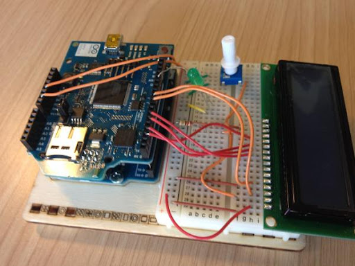
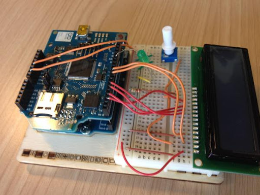
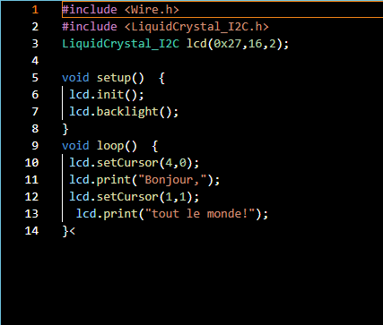
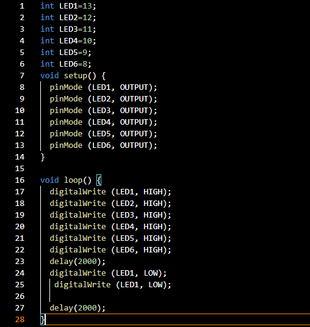
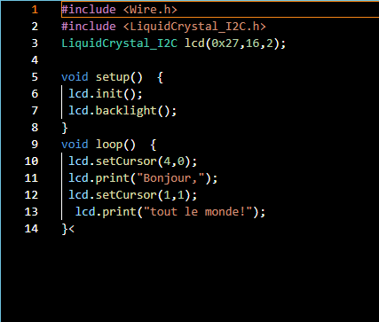
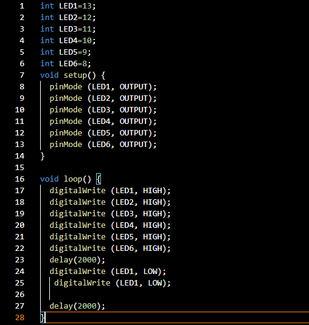

Langues
Français
Anglais (english)
Japonais (日本語)
Espagnol
Sciences
SIN
Mathématiques
Physique-chimie
HTML/CSS
Arduino
Arduino est la marque d'une plateforme de prototypage open-source qui permet aux utilisateurs de créer des objets électroniques interactifs à partir de cartes électroniques matériellement libres sur lesquelles se trouve un microcontrôleur
Le C++ est un langage de programmation : il permet d'écrire des programmes informatiques, pour créer des applications mobiles ou des jeux vidéo, par exemple. C++ est créé à partir du langage C, dont il étend les fonctionnalités : C++ permet notamment de faire de la programmation orientée objet (POO)
Pourquoi ça m'interesse ?
Je souhaite apprendre le codage en général donc il faut que je comprenne le plus de language de programmation possible.
C'est quoi les interruptions et le moniteur série dans Arduino et comment ça marche ?
Une interruption, en langage de programmation, est un signal qui stoppe l'activité du processeur afin d'exécuter une fonction différente. L'interruption peut commencer due à un signal externe, notamment appuyer sur un bouton; ou interne, tel qu'un temporisateur ou un signal de software.
Le moniteur série permet de recevoir et envoyer des informations sur une liaison de type RS232/Série. On le trouve dans le menu Outils / Moniteur Série. Une nouvelle fenêtre s'ouvre. Elle permet d'afficher les informations reçues sur la liaison Série et d'en envoyer.
Quelques montages et programmes Arduino
 


 


